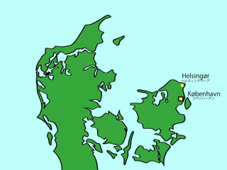

ヘルスィングウーア（Helsingør）は，シェラン島の北東の端に位置する町で，コペンハーゲン中央駅からは電車で45分程度です．ヘルスィングウーアへ向かうこの電車は，シェラン島の東海岸沿いを走っており，車窓から望める景色は非常に美しいものです．
ヘルスィングウーアは，シェークスピアの小説「ハムレット」の舞台となったクローンボー城で有名です．2000年には，世界遺産にも登録されました．クローンボー城は，16世紀中頃，フレズレク2世によって建設され，元々はスウェーデンとの間にあるウーアソン海峡（Øresund）を通るための通行税を徴収することが目的でした．その後，お城は兵舎として使われ，現在は博物館・美術館となっています．そのような歴史的経緯から，クローンボー城には，教会や舞踏会用の広間など当時の王室の豪華絢爛さを象徴するものの他に，大砲や監獄などに見られるような要塞としての側面も残されています．
爆撃から身を守るための場所である防爆室には，デンマークの伝説上の英雄であるホルガ・ダンスケ（Holger Danske）の座像があります．ホルガ・ダンスケは，国が危機に瀕した際に目覚め立ち上がるという伝説があります．